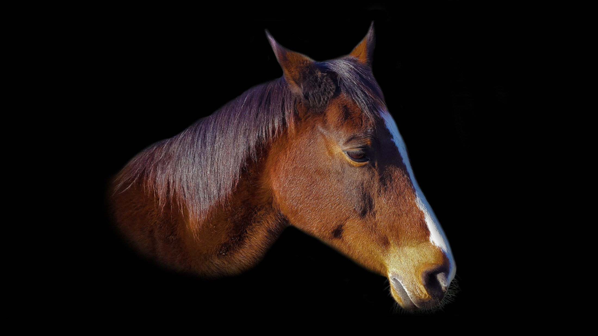
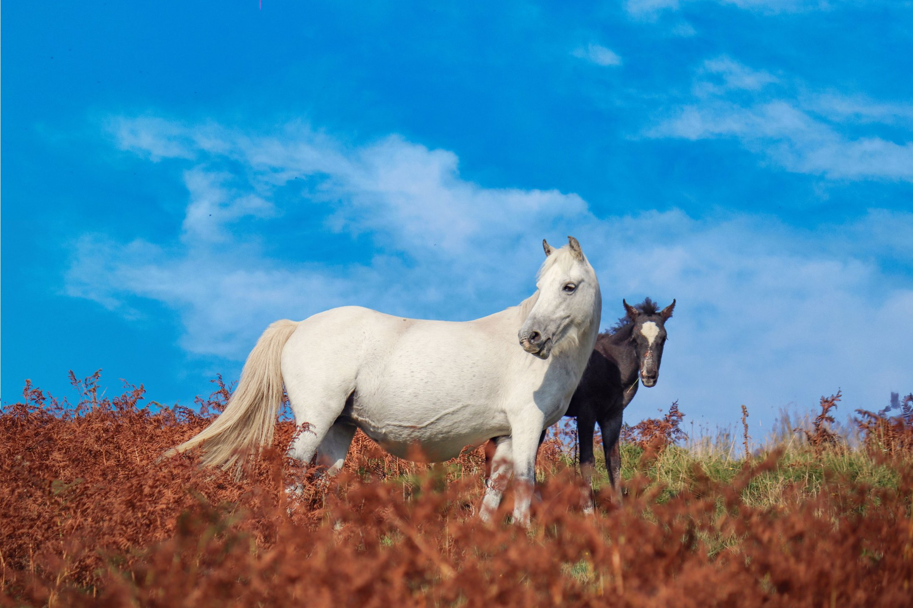
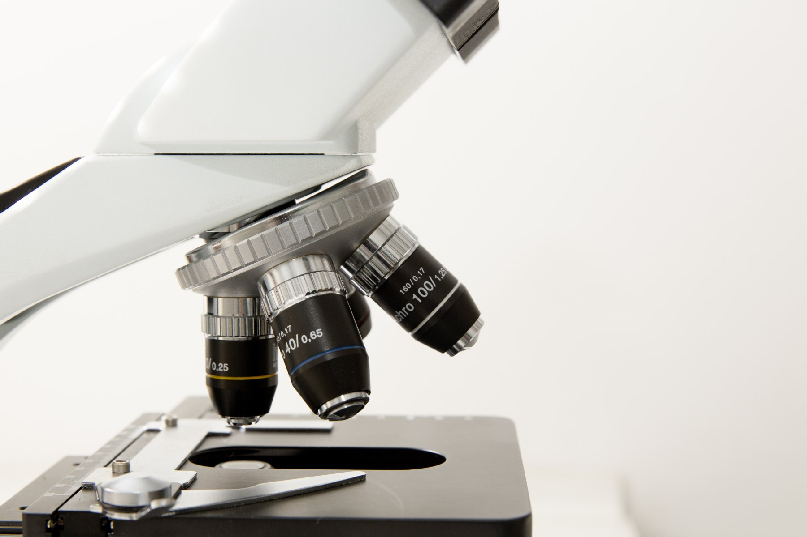
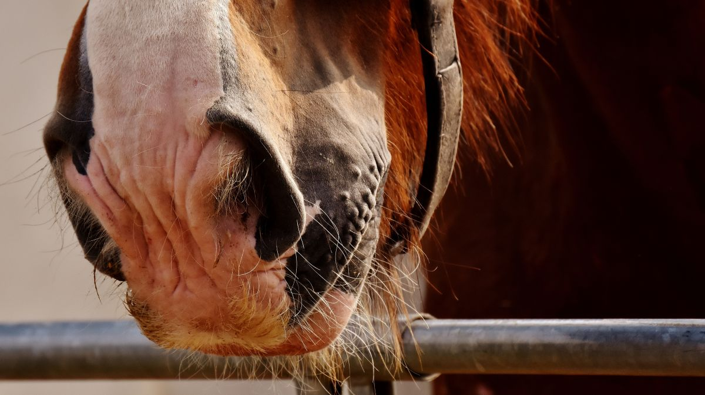
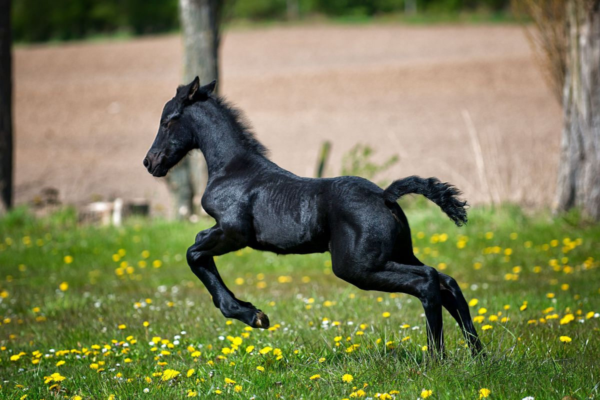
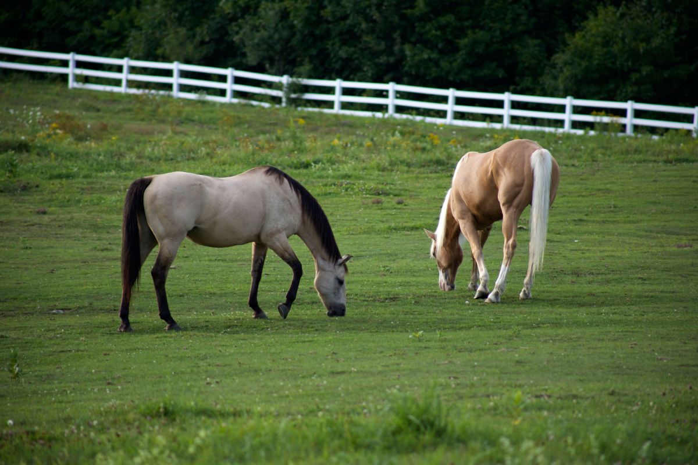
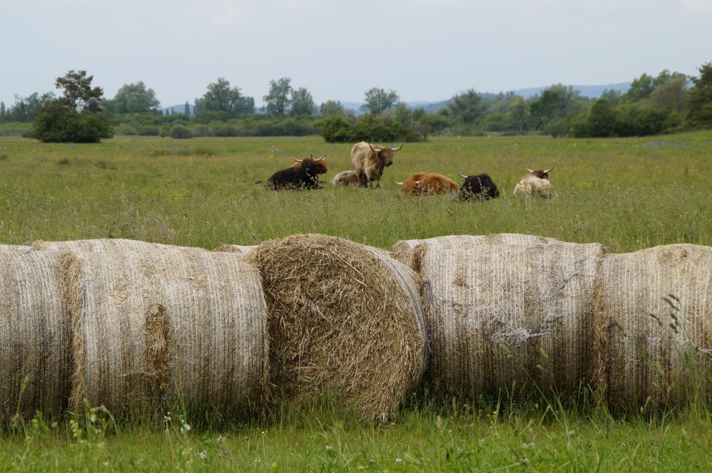
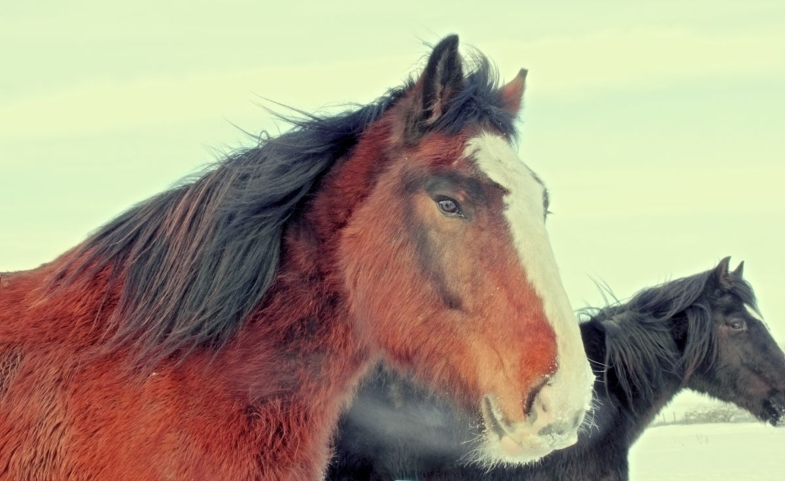

01
Banco de semen
Genética de reproductores para inseminar sus yeguas. El material queda guardado en nitrógeno líquido y sale cuando usted lo pide.
Almacenamiento indefinido
Villarrica · Región de La Araucanía
Banco de semen equino, transferencia de embriones y clínica de equinos y mascotas. Congelamos, guardamos y despachamos material genético en la Región de La Araucanía.
01 — Qué hacemos
01
Genética de reproductores para inseminar sus yeguas. El material queda guardado en nitrógeno líquido y sale cuando usted lo pide.
Almacenamiento indefinido
02
Congelamos el semen de su reproductor para que siga disponible después. Incluye congelación post mortem desde el epidídimo testicular, que es la última oportunidad cuando el animal muere.
Más de 10 años de experiencia
03
Inseminación artificial en yeguas y transferencia de embriones, con seguimiento por ecografía.
Con control ecográfico
04
Radiología digital directa, endoscopía, ultrasonido, cirugías y hospitalización. Equinos, caninos y felinos.
Con hospitalización

Un potro vive veinte años.
Su genética, mucho más.
02 — La pregunta que nadie contesta por escrito
Un criador que manda su reproductor a congelar entrega el animal y espera. Esto es lo que ocurre en el medio, en orden, con lo que se sabe y lo que hay que preguntar.
01
Ingresa a pesebrera. Se revisa estado general y se programa la colecta.
02
Se obtiene el eyaculado con vagina artificial. Es el único paso donde participa el animal.
03
Se mide concentración y movilidad. Acá se decide si la muestra sirve para congelar: no todo eyaculado resiste el proceso.
04
Se mezcla con el diluyente que protege a la célula del hielo y se envasa en pajuelas rotuladas con el nombre del reproductor.
05
Bajada de temperatura por etapas y paso a nitrógeno líquido. Es el momento crítico: si baja demasiado rápido, se forma hielo dentro de la célula.
06
Se descongela una pajuela de prueba y se vuelve a medir movilidad. Es lo que dice si la partida quedó buena, y es el número que un criador debería pedir siempre.
07
Las pajuelas quedan en el termo del banco. Cuando usted las pide, salen en un contenedor seco que mantiene el frío durante el viaje.
Los valores marcados como ejemplo son eso: ejemplos. Los tiempos, costos y protocolos reales los define FertyVet y quedan en esta página cuando ellos los entreguen. Nada de lo anterior reemplaza la indicación de un médico veterinario.

Para eso es todo lo anterior
Una preñez que llega a término.

03 — La clínica
El mismo recinto atiende equinos, caninos y felinos con diagnóstico por imagen y pabellón.
Los servicios de esta lista están publicados en el sitio actual de FertyVet. Los horarios y valores no: hay que pedirlos por teléfono.
04 — El lugar





05 — Contacto
El sitio actual de FertyVet pide reservar hora con anticipación por teléfono o WhatsApp. Ese aviso es de abril de 2020 y conviene confirmarlo.
Para el dueño de FertyVet
Un dueño de mascota que ve una web vieja igual llama. Un criador que va a dejarle el semen de un reproductor caro, no: está evaluando si usted todavía existe y si su cadena de frío es confiable. Una página de 2014 con la última noticia de la pandemia contesta esas dos preguntas de la peor manera posible, y contesta mal algo que en realidad usted hace bien.
Lo caro no es la web. Lo caro es que un criador de Osorno se lleve el potro a Santiago porque su sitio parecía abandonado.